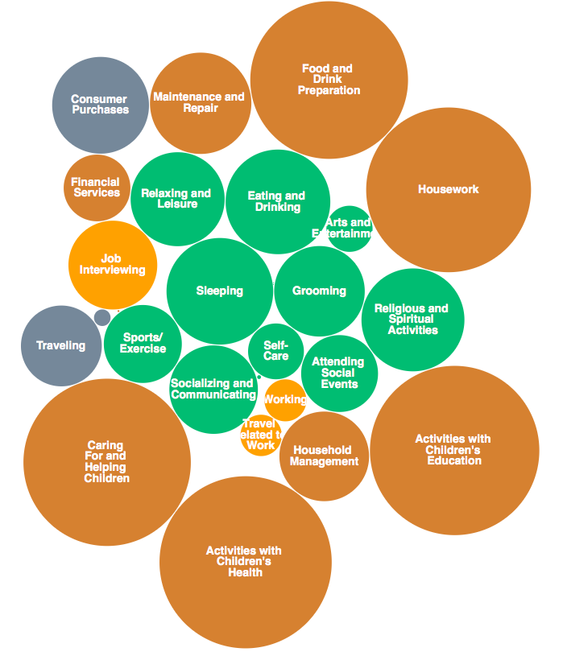

Jeremy Smith
The Data Incubator - Capstone Project
"Can we predict people's work-life balance
from their demographic information?"
Data from the OECD better life index (work-life balance score)
Poor work-life balance has been correlated to stress-related illness
Healthcare Industries
e.g. hospitals, care providers, ACOs, insurance providers
To categorize customers and patients into risk groups
Use those categories to provide tailored health care
| Life | Work ("paid") | Work ("unpaid") |
|---|---|---|
|
Sleeping Health-Related Self-Care Eating and Drinking Socializing and Communicating Relaxing and Leisure |
Working Job Search and Interviewing Travel Related to Work |
Housework Household Management House Maintenance Caring For and Helping Children |
From the American Time Use Survey (ATUS) published by the Bureau of Labor Statistics from 2003 to 2015
Deviations from mean time of some select activities, only for ages > 18
age group
KDE distribution of activity times by age
Red: under 30's
Blue: over 60's
KDE distribution of activity times by income
Red: Low income (less than $200 per week)
Blue: High income (more than $1500 per week)
Finding groups of people based on how they spend their time using KMeans unsupervised learning
Cluster 1: "Part Time Workers with Children"
Cluster 2: "Full Time Workers"
Cluster 3: "Students"
Link to web app